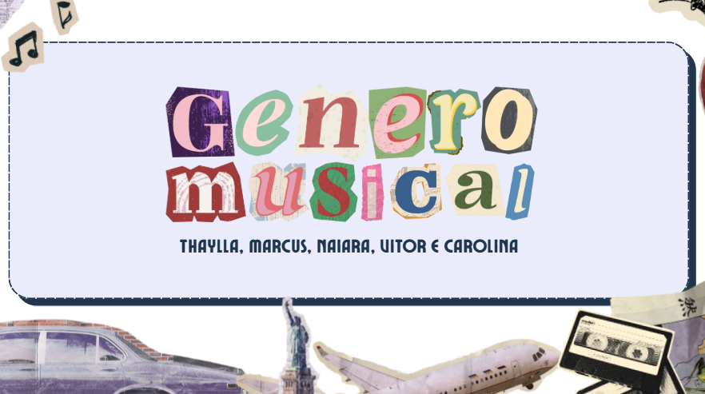

Este trabalho teve como escopo a elaboração de uma pesquisa e o levantamento de dados estatísticos a fim de realizar uma análise e chegar a uma conclusão do tema determinado pelo grupo. Eu, juntamente ao meu grupo, desenvolvemos uma pesquisa que avalia o gosto musical individual dos estudantes do 3ºB, complementando com dados sobre plataformas digitais e frequência.
Habilidades e Competências

Anexo